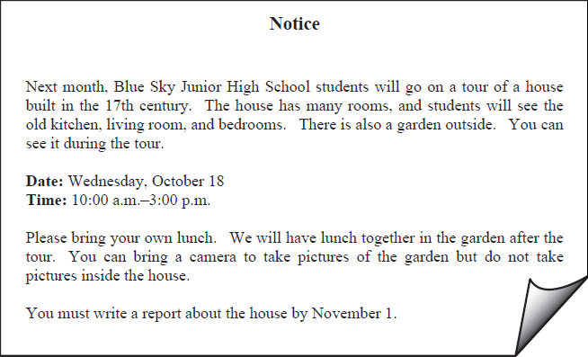
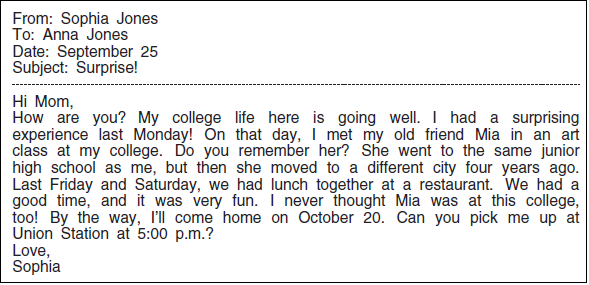
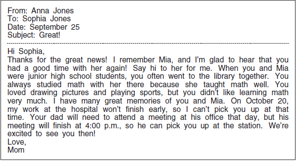
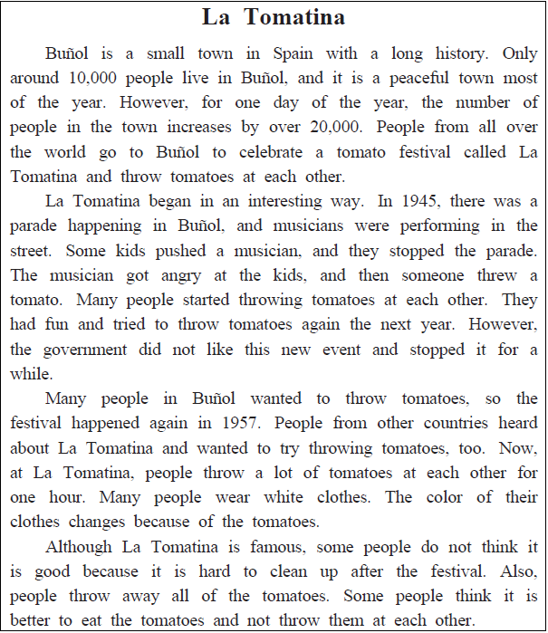

英語検定 ３級(2025年第2回No.3) 残り時間が0になると、自動的に採点します。 時間内に終了する場合は、一番下の「採点する」のボタンを押してください。 残り時間： 分 秒 No 英語検定３級筆記(2025年第2回) 3A 次の掲示の内容に関して、(21)と(22)の質問に対する答えとして 最も適切なもの、または文を完成させるのに最も適切なものを、 解答欄の1～4の中から一つ選びなさい。  No21 What must students do on October 18? 1 Clean the garden. 2 Take pictures of the house. 3 Bring their own lunch. 4 Take an exam at school. 答え： 1 2 3 4 No22 Where can students take photos during the tour? 1 In the kitchen. 2 In the garden. 3 In the bedrooms. 4 In the living room. 答え： 1 2 3 4 3B 次のEメールの内容に関して、(23)から(25)までの質問に対する答えとして最も適切なもの、 または文を完成させるのに最も適切なものを、解答欄の1～4の中から一つ選びなさい。   No23 When did Sophia meet Mia in her class at college? 1 Four years ago. 2 Last Monday. 3 Last Friday. 4 Last Saturday. 答え： 1 2 3 4 No24 What did Sophia and Mia often do together when they were junior high school students? 1 They tried many sports at school. 2 They drew pictures at Sophia’s home. 3 They studied math at the library. 4 They went home after school. 答え： 1 2 3 4 No25 What will Sophia’s mother do on October 20? 1 Pick Sophia up at Union Station. 2 Work at the hospital. 3 Visit her husband’s office. 4 Meet her old friends at a café. 答え： 1 2 3 4 3C 次の英文の内容に関して、(26)から(30)までの質問に対する答えとして最も適切なもの、 または文を完成させるのに最も適切なものを、解答欄の1～4の中から一つ選びなさい。  No26 How many people live in Buñol? 1 About 10,000 people. 2 About 20,000 people. 3 About 22,000 people. 4 About 50,000 people. 答え： 1 2 3 4 No27 What happened during the parade in 1945? 1 Children played music at school. 2 Children danced in the street. 3 A musician bought tomatoes at the market. 4 A musician got angry at some children. 答え： 1 2 3 4 No28 What do a lot of people do at La Tomatina? 1 Perform a dance. 2 Eat tomatoes. 3 Wear white clothes. 4 Go to a farm. 答え： 1 2 3 4 No29 Some people do not like La Tomatina because 1 or 2 or 3 or 4 1 there are too many people. 2 cleaning up after the festival is difficult. 3 it is too expensive. 4 the tomatoes are not delicious. 答え： 1 2 3 4 No30 What is this story about? 1 A parade in 1945. 2 A new city in Spain. 3 A famous festival. 4 A farming event. 答え： 1 2 3 4




 英語検定 ３級(2025年第2回No.3)
英語検定 ３級(2025年第2回No.3)